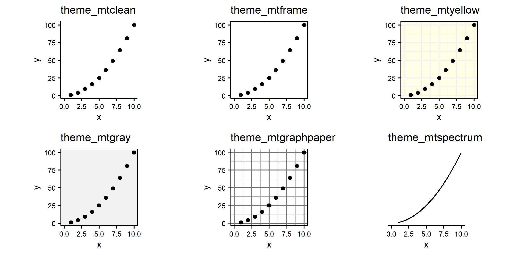

mtplot package user guide
Back to downloads.
Changelog
Version 1.2.2
Added additional themes for ggplot2, including theme_mtgray, theme_mtgraphpaper, and theme_mtspectrum. Made changes to the theme_mtyellow theme.
Previous versions
Not documented
Features
Themes
Following themes for ggplot2 are currently available:

downfill
Fill empty cells in data frame with the nearest valid value above it. Useful for pre-processing of manually collected data.